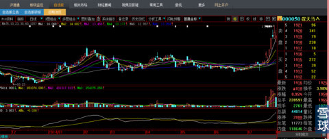
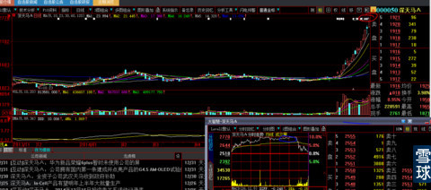
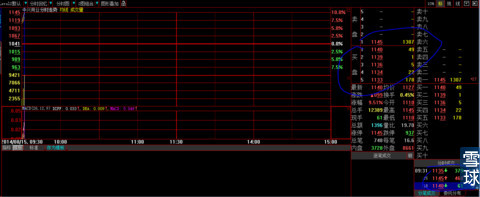
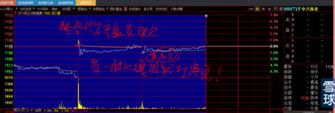
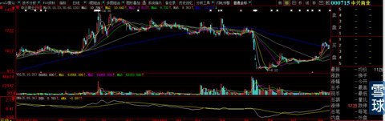

备注：本来以下是给一个粉丝的回复，写写就成这样了，任何事情都有缘由。
2014年8月2日星期六翻盘发现000050深天马时，它长这样的。一下子拽住我翻盘的手，对我这样人来说，这样的图形和量价关系、均线的力度与陡峭的角度，未来还有秘密可言吗？今天这个时间点贴出下图，看出来我用心之深的人请不要说破，即使你看懂也得有三手预案准备。先来后到这是命运的顺序。

2014年8月15日从000050涨停板27.7元卖出，前后9个交易日盈利60%出头（满仓出击所以盈利绝对额很大）。逃顶的功夫是这样的：看看分时图2个小时在涨停板处打转转，看看股价位置：我是傻子也知道涨停板价卖了再说呀，卖出后，股价接下来就像泼水一样飞流直下。

卖出的资金当天就再加仓到000715，早盘的涨停就是我直接扫盘打出来的，因为卖单太少。

周日详细研究前因后果后，又在所圈之处再加仓。当天晚上就公告重组停牌。这就是“运气”。

当晚就停牌至今。

2014年8月18日周一收盘后就被公告停牌至今，我一部分资金关在里面，认为反正停牌正好有时间，第一次在东方财富000715股吧写个帖子自娱自乐。从而见识了各个股吧那么多散户歇斯底里的哀嚎。被同持有000715的人建议来雪球，说雪球这里人素质如何高，他又没有说“雪球”是个门户网站，我以为是冬运会项目，就没有理他。他再三说明让我百度后才知道原来雪球是个类似东方财富那样的门户网站。所以当时我这里就是几个人说话的地方，严禁转发是我不想让人知道，原意是类型“微信朋友圈”概念。结果2个月后有粉丝300人，把我吓了一跳（粉丝还是小孩告诉我才知道啥意思），要知道300人里有一个被我误导就是造孽呀！开始，我发现帖子点击数超过600就删除。自认为粉丝都看过2遍了没有遗漏，最开始的删帖就是这样朴素认知来的，是怕新粉加入。厌恶转发就是不想让太多人来这里，因为我写的技术贴比较即时、独特而枯燥，自以为高门槛首先就会把浮躁的菜鸟挡在门外。
结果事与愿违，来的基本都是菜鸟，他们的发言让我看到的是这样一幅场景：一大片羊群将被待宰！不愿意这样多愁善感，就全部删除了11月15日之前全部帖子。
全部删帖后，实在不想看到粉丝功亏一篑。又在2014年11月16日大盘看似要开始大跌时写出《未来一段时间的指数》震荡上行到3000点，在我看来基本没有什么疑义，股指冲关夺隘必然需要的是大股票。现在你们去看看那时候的大盘K线组合吓人不吓人？百度一下媒体当时的言论会不会让你万劫不复？11月16日写了指数方向文章后，当天又写出《国务院再度开会研究降低企业融资成本，注册制应该是议题之一》就是期望我的600粉丝里会有与众不同的命运改变。11月21日我不可能知道国家会在24日降息呀，但是技术底气的支撑11月21日再次写出未来最有搞头的板块《券商板块行情才刚刚开始》文章，甚至：散户不要被证券类股票前期涨幅所吓倒，板块的行情其实才刚刚开始这样严重与我性格不符的煽动性词语。11月25日小盘券商开始连续涨停，我知道散户“见小利忘命、遇大利惜身”的本性不可能敢于追高券商股，11月25日就开始详细撰写中国建筑基本资料分析。到了11月28日散户已经完全被市场走势打蒙了，手足无措。索性就直接写了一个帖子《实在不会买股票就买建设银行吧》，写完后考虑到菜鸟散户的基础太差不懂得筛选，不知道股票谁快谁慢，贴出来30分钟就删除了，再花半小时写出《就买中国建筑吧》，用大白话说的大意是：如果你之前没有赚到钱或者有亏损，那就在这个股票里用一个月时间赚到50%先报仇再说，有了本金种子未来就有不一样的从容命运的选择。
再之后，就没有写出这类指名道姓帖子，开始写技术类帖子玩。粉丝其实没有体会我这样的良苦用心：只有这样你才能有定力把中国建筑拿满1个月实现目标呀！
现在又在开始写一个《家有儿女》系列，不还是希望在你守XHP的时候不寂寞还有心得好看！
 |
来雪球帖子总结炒的是心 2015-01-03 12:02:19 |
Copyright © 1996-2014 SINA Corporation All Rights Reserved.